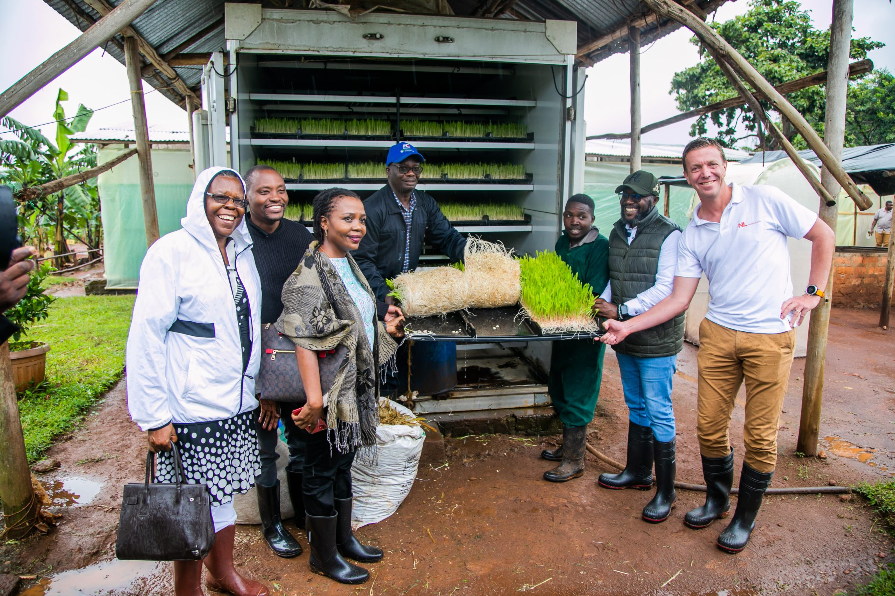

MST Junior School.We stand for Mathematics,Science and Technology.
we provide an environment for a student to get skills for the future.
the spantucular environment enables our children to have a peaceful and enjoyable learning.
MST Junior School.
our school has participated in agricaltural shows which we have been winning.Our students went and competed in the national compitions in jinja . so far we have two compitions of this kind and we have been winning them at primary level.
it has been fantastic sofar. It has been a fan experience at each and ebvery exbition.These shows tsch people so much about agricultre
